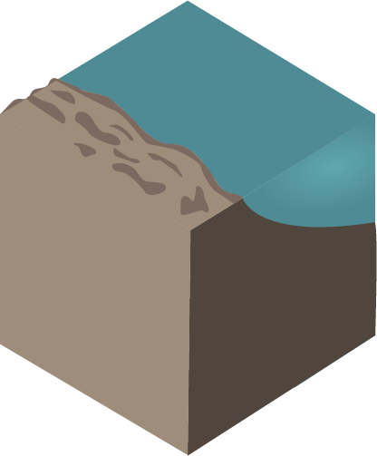
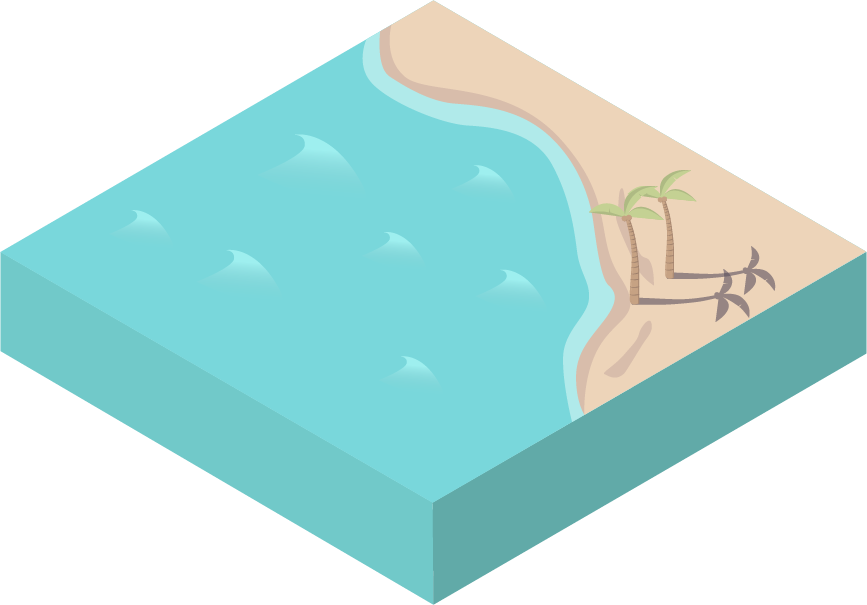
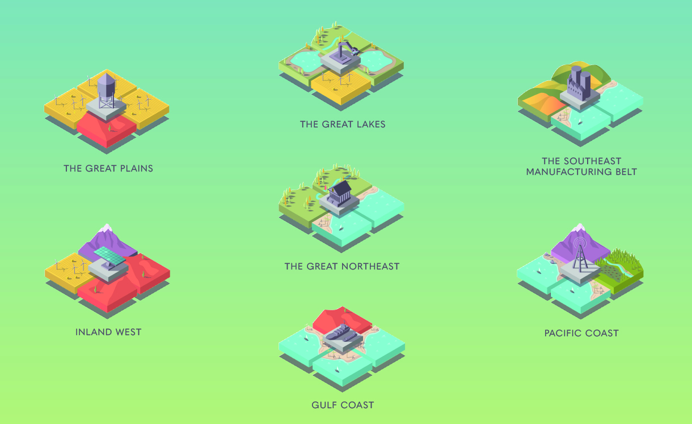

We looked at how each region was divided up, and developed a theme of modularity. Each region has many different working parts in it and to ignore that is to disregard what makes each region unique and awesome. Adding data elements, with help from chart.js fleshed out the idea that each region is not only alive and breathing, but has a past and future.


Process
The earliest versions of the modules. This was when color, texture, and structure would be treated as the illustration style developed.

Modules becoming more refined

